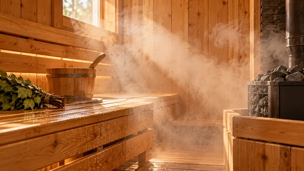
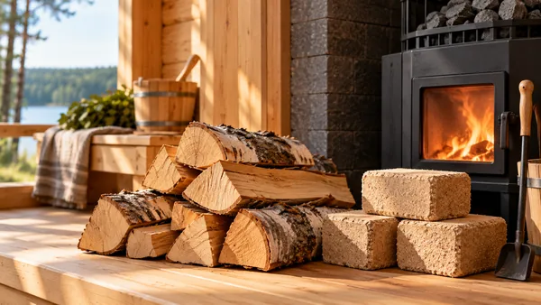
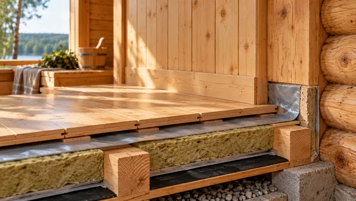
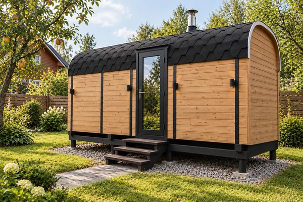
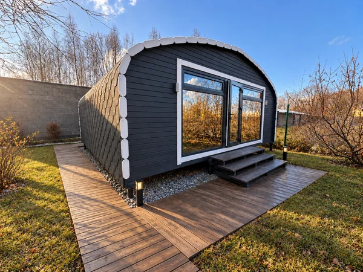
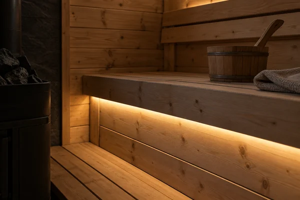
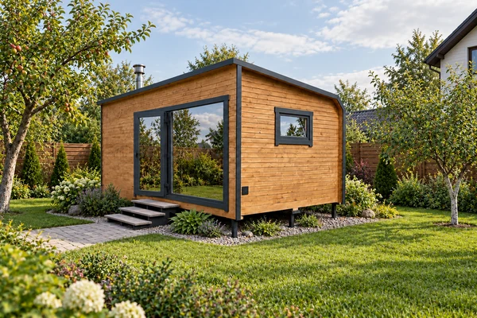
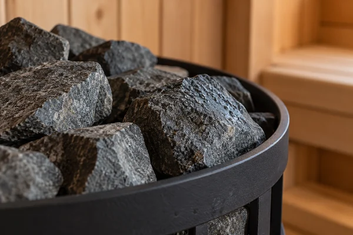

Знать свою баню
Журнал: выбираем баню с удовольствием
Понятно о материалах, устройстве и уходе за баней. Ответы на вопросы, которые действительно возникают у владельцев.
Баня 4, 5 или 6 метров: как выбрать размер и сравнить цены
Длины 4–6 м, ширина трёх моделей и открытые цены: как выбрать внешний размер бани и учесть оснащение и доставку.
ЧитатьВыбор бани · 5 минут чтенияКомплектация готовой бани: что проверить в расчёте перед заказом
Как сопоставить модель, размер, оснащение, сборку и доставку в одном расчёте и подготовить вопросы перед заказом готовой бани.
ЧитатьВыбор бани · 5 минут чтенияКак принять готовую баню: что проверить при получении
Памятка по приёмке готовой бани: модель, размер, комплектация, доступные поверхности, документы и вопросы продавцу.
ЧитатьМатериалы · 6 минут чтенияЕль или сосна для бани: какая древесина лучше и почему
Отличия ели и сосны, смола в парной и выбор профилированной доски с лунным пазом.
ЧитатьМатериалы · 6 минут чтенияЛунный паз в бане: зачем нужен и что он даёт на практике
Как соединяются профилированные доски и почему лунный паз не означает стену из круглого бревна.
Читать
Эксплуатация · 5 минут чтенияКак пар влияет на деревянную баню и почему её важно просушивать
Пар — нормальная часть банного дня. Разбираемся, когда влага полезна для атмосферы, а когда угрожает конструкции.
Читать
Эксплуатация · 6 минут чтенияДрова для бани: берёза, осина, брикеты и почему важна сухость
Почему берёза — не единственный выбор, чего ждать от брикетов и какие материалы нельзя считать безопасным топливом.
Читать
Оснащение · 6 минут чтенияНужно ли утеплять пол в бане и когда это действительно полезно
Когда утепление помогает комфорту, почему толщину нельзя оценивать отдельно от материала и как не запереть влагу в полу.
Читать
Выбор бани · 5 минут чтенияКак выбрать готовую баню для дачи
Сначала определите место на участке и нужные помещения, затем сравните размеры и оснащение. Стоимость бани и расходы на её доставку и установку проверяйте отдельно.
Читать
Выбор бани · 5 минут чтенияИз чего складывается цена готовой бани
Считайте четыре части: стоимость конкретной модели и размера, выбранные дополнения, доставку с разгрузкой и подготовку участка. Цена «от» показывает только начальный вариант изделия.
Читать
Оснащение · 5 минут чтенияКвадро 5 м Делюкс: что входит в комплектацию
«Делюкс» Квадро 5 м — 562 000 ₽. Уже включены дополнительный верхний и выдвижной нижний полки, подспинники, утеплённый пол, вынос топки, LED до 10 м и два уличных фонаря с подключением. Шкаф входит в «Комфорт». Доставка отдельно.
Читать
Участок · 4 минут чтенияКак подготовиться к доставке готовой бани
До согласования доставки подготовьте расположение участка, фотографии подъезда и места установки, сведения об основании и внешних подключениях. Тип основания и способ разгрузки согласуются для конкретного изделия и участка.
Читать
Оснащение · 4 минут чтенияВентиляция и форточка в бане: что уточнить до покупки
Уточните схему притока и удаления воздуха, её связь с выбранной печью и порядок просушки. Наличие открывающегося окна само по себе не описывает работу всей вентиляции.
Читать